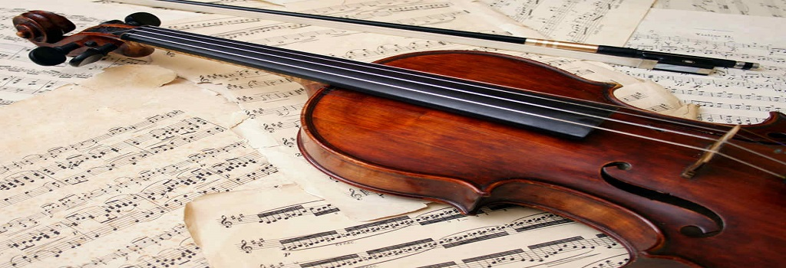

ERUDITA
Breve resumo sobre a música erudita:
Música clássica, música de concerto ou música erudita é o nome dado à principal variedade de música produzida ou enraizada nas tradições da música secular e litúrgica ocidental. Abrange um período amplo que vai aproximadamente do século IX até o presentee segue cânones preestabelecidos no decorrer da história da música. Apesar do nome que remete a algo do 'passado' ou 'antigo', esta variedade de música é escrita também nos dias de hoje, através de compositores do século XXI que criam obras inéditas, originais e atuais. Alguns estudiosos definem a música de concerto como aquela que se baseia principalmente na clareza, no equilíbrio, na objetividade da estrutura formal, em lugar do sentimentalismo exagerado ou da falta de limites de linguagem musical. Já segundo o Dicionário Grove de Música, este tipo de música seria fruto da erudição e do estudo formal e não apenas das práticas folclóricas e populares.